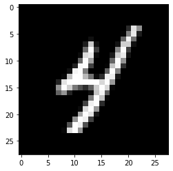
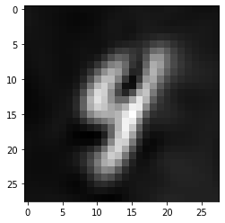

import os
os.environ["CUDA_VISIBLE_DEVICES"] = "0"
# turn off preallocation by JAX
os.environ["XLA_PYTHON_CLIENT_PREALLOCATE"] = "false"
import numpy as np
import pandas as pd
from tqdm import tqdm
import jax
import jax.numpy as jnp
import flax.linen as nn
import distrax as dx
import optax
# load mnist dataset from tensorflow datasets
import tensorflow_datasets as tfds
from sklearn.model_selection import train_test_split
import matplotlib.pyplot as plt# define initializers
def first_layer_init(key, shape, dtype=jnp.float32):
num_input = shape[0] # reverse order compared to torch
return jax.random.uniform(key, shape, dtype, minval=-1.0/num_input, maxval=1.0/num_input)
def other_layers_init(key, shape, dtype=jnp.float32):
num_input = shape[0] # reverse order compared to torch
return jax.random.uniform(key, shape, dtype, minval=-np.sqrt(6 / num_input)/30, maxval=np.sqrt(6 / num_input)/30)
class Encoder(nn.Module):
features: list
encoding_dims: int
@nn.compact
def __call__(self, x_context, y_context):
x = jnp.hstack([x_context, y_context.reshape(x_context.shape[0], -1)])
x = nn.Dense(self.features[0], kernel_init=first_layer_init, bias_init=first_layer_init)(x)
x = jnp.sin(30*x)
# x = nn.Dense(self.features[0])(x)
# x = nn.relu(x)
for n_features in self.features[1:]:
x = nn.Dense(n_features, kernel_init=other_layers_init, bias_init=other_layers_init)(x)
x = jnp.sin(30*x)
# x = nn.Dense(n_features)(x)
# x = nn.relu(x)
x = nn.Dense(self.encoding_dims)(x)
representation = x.mean(axis=0, keepdims=True) # option 1
return representation # (1, encoding_dims)
class Decoder(nn.Module):
features: list
output_dim: int
@nn.compact
def __call__(self, representation, x):
representation = jnp.repeat(representation, x.shape[0], axis=0)
x = jnp.hstack([representation, x])
x = nn.Dense(self.features[0], kernel_init=first_layer_init, bias_init=first_layer_init)(x)
x = jnp.sin(30*x)
# x = nn.Dense(self.features[0])(x)
# x = nn.relu(x)
for n_features in self.features:
x = nn.Dense(n_features, kernel_init=other_layers_init, bias_init=other_layers_init)(x)
x = jnp.sin(30*x)
# x = nn.Dense(n_features)(x)
# x = nn.relu(x)
x = nn.Dense(self.output_dim*2)(x)
loc, raw_scale = x[:, :self.output_dim], x[:, self.output_dim:]
scale = jnp.exp(raw_scale)
return loc, scale
class CNP(nn.Module):
encoder_features: list
encoding_dims: int
decoder_features: list
output_dim: int
@nn.compact
def __call__(self, x_content, y_context, x_target):
representation = Encoder(self.encoder_features, self.encoding_dims)(x_content, y_context)
loc, scale = Decoder(self.decoder_features, self.output_dim)(representation, x_target)
return loc, scale
def loss_fn(self, params, x_context, y_context, x_target, y_target):
loc, scale = self.apply(params, x_context, y_context, x_target)
predictive_distribution = dx.MultivariateNormalDiag(loc=loc, scale_diag=0.005+scale)
return -predictive_distribution.log_prob(y_target)Load MNIST
ds = tfds.load('mnist')def dataset_to_arrays(dataset):
data = []
labels = []
stopper = 0
end = 100
for sample in dataset:
data.append(sample["image"].numpy())
labels.append(sample["label"].numpy())
stopper += 1
if stopper == end:
break
return np.array(data), np.array(labels)[..., None]
train_data, train_labels = dataset_to_arrays(ds["train"])
test_data, test_labels = dataset_to_arrays(ds["test"])
train_data.shape, train_labels.shape, test_data.shape, test_labels.shape2023-06-02 09:58:48.609001: W tensorflow/core/kernels/data/cache_dataset_ops.cc:856] The calling iterator did not fully read the dataset being cached. In order to avoid unexpected truncation of the dataset, the partially cached contents of the dataset will be discarded. This can happen if you have an input pipeline similar to `dataset.cache().take(k).repeat()`. You should use `dataset.take(k).cache().repeat()` instead.
2023-06-02 09:58:48.681190: W tensorflow/core/kernels/data/cache_dataset_ops.cc:856] The calling iterator did not fully read the dataset being cached. In order to avoid unexpected truncation of the dataset, the partially cached contents of the dataset will be discarded. This can happen if you have an input pipeline similar to `dataset.cache().take(k).repeat()`. You should use `dataset.take(k).cache().repeat()` instead.((100, 28, 28, 1), (100, 1), (100, 28, 28, 1), (100, 1))coords = np.linspace(-1, 1, 28)
x, y = np.meshgrid(coords, coords)
train_X = jnp.stack([x, y], axis=-1).reshape(-1, 2)
train_y = jax.vmap(lambda x: x.reshape(-1, 1))(train_data) / 255.0
train_X.shape, train_y.shape, type(train_X), type(train_y)((784, 2),
(100, 784, 1),
jaxlib.xla_extension.ArrayImpl,
jaxlib.xla_extension.ArrayImpl)iterations = 10000
def loss_fn(params, context_X, context_y, target_X, target_y):
def loss_fn_per_sample(context_X, context_y, target_X, target_y):
loc, scale = model.apply(params, context_X, context_y, target_X)
# predictive_distribution = dx.MultivariateNormalDiag(loc=loc, scale_diag=scale)
# return -predictive_distribution.log_prob(target_y)
return jnp.square(loc.ravel() - target_y.ravel()).mean()
return jax.vmap(loss_fn_per_sample, in_axes=(None, 0, None, 0))(context_X, context_y, target_X, target_y).mean()
value_and_grad_fn = jax.jit(jax.value_and_grad(loss_fn))
model = CNP([256]*2, 128, [256]*4, 1)
params = model.init(jax.random.PRNGKey(0), train_X, train_y[0], train_X)
optimizer = optax.adam(1e-5)
state = optimizer.init(params)
# losses = []
# for iter in tqdm(range(iterations)):
# tmp_index = jax.random.permutation(jax.random.PRNGKey(iter), index)
# context_X = train_X[tmp_index][:int(train_X.shape[0]*0.05)]
# context_y = train_y[:, tmp_index, :][:, :int(train_X.shape[0]*0.05), :]
# target_X = train_X[tmp_index][int(train_X.shape[0]*0.05):]
# target_y = train_y[:, tmp_index, :][:, int(train_X.shape[0]*0.05):, :]
# # print(context_X.shape, context_y.shape, target_X.shape, target_y.shape)
# # print(loss_fn(params, context_X, context_y, target_X, target_y).shape)
# loss, grads = value_and_grad_fn(params, context_X, context_y, target_X, target_y)
# updates, state = optimizer.update(grads, state)
# params = optax.apply_updates(params, updates)
# losses.append(loss.item())
def one_step(params_and_state, key):
params, state = params_and_state
tmp_index = jax.random.permutation(key, train_X.shape[0])
context_X = train_X[tmp_index][:int(train_X.shape[0]*0.05)]
context_y = train_y[:, tmp_index, :][:, :int(train_X.shape[0]*0.05), :]
target_X = train_X[tmp_index][int(train_X.shape[0]*0.05):]
target_y = train_y[:, tmp_index, :][:, int(train_X.shape[0]*0.05):, :]
loss, grads = value_and_grad_fn(params, context_X, context_y, target_X, target_y)
updates, state = optimizer.update(grads, state)
params = optax.apply_updates(params, updates)
return (params, state), loss
(params, state), loss_history = jax.lax.scan(one_step, (params, state), jax.random.split(jax.random.PRNGKey(0), iterations))plt.plot(loss_history[10:]);
test_key = jax.random.PRNGKey(0)
tmp_index = jax.random.permutation(test_key, train_X.shape[0])
context_X = train_X[tmp_index][:int(train_X.shape[0]*0.5)]
context_y = train_y[:, tmp_index, :][:, :int(train_X.shape[0]*0.5), :]
target_X = train_X#[tmp_index][int(train_X.shape[0]*0.5):]
target_y = train_y#[:, tmp_index, :][:, int(train_X.shape[0]*0.5):, :]
id = 91
plt.imshow(train_y[id].reshape(28, 28), cmap="gray", interpolation=None);
locs, scales = jax.vmap(model.apply, in_axes=(None, None, 0, None))(params, context_X, context_y, target_X)
# full_preds = jnp.concatenate([context_y, locs], axis=1)
# full_preds = full_preds.at[:, tmp_index, :].set(full_preds).__array__()
plt.figure()
plt.imshow(locs[id].reshape(28, 28), cmap="gray", interpolation=None);
